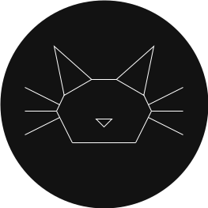
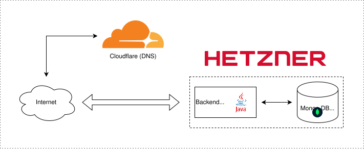

Gatto's Lab

As you might have figured out by now, it's this website! I always wanted to have my own slice of the internet all for myself and so i decided to develop a simple website with my GitHub projects and interests as the subject.
Backend
I originally used Java 25 with Spring Boot as the language and framework, but i decided to remove the framework entirely and just se Undertow as the web-server and manage everything manually, in order to have more control and to see what it would be like to develop something without the help of a framework. The system serves the whole site directly from memory, thus completely eliminating disk usage (totally overkill of the sub 1 RPS i receive on average, but it was fun to implement). The backend also communicates with a simple MongoDB instance to store logs, usage and request metrics. This observability system is fully custom and took me a while to get right as i mostly played around with different techniques and implementations.
Frontend
I decided to use vanilla HTML, CSS and a bit JS in specific places (non "public" pages, where i can view the metrics and logs). The public site can be browsed without JS enabled at all, which is nice as the web of today overly relies on it for functionality that can be achieved with traditional methods without too much effort. The assets are minified with the help of a minifier called HTML Minifier Next in conjunction with custom preprocessing implemented in Java that bundle the HTML, CSS, SVG assets and the JavaScript code (when present) into a single page in order to reduce round-trips as much as possible.
Infrastructure
On the infrastructure side i went with Hetzner as the server provider, since their offers were quite affordable for a single individual like myself: a bit over 4€ per month for a VPS with 2 vCPUs, 4GB of RAM, 40GB of storage and 20TB of outgoing network traffic. The site is currently proxied via Cloudflare (which also works as the DNS servers), as it can cache the content on different geographical regions (not that i need it in reality, but i though it would be cool to have), as well as provide protections and usage statistics.
Lastly, to deploy the site, i made use of Jenkins on the VPS (not the best practice, but the project is quite small) for fully automated build and deploy pipeline that is triggered on commits to the main git branch.
Lastly, to deploy the site, i simply execute a shell script i made on the VPS directly that pulls, builds and launches the whole website as a sort of ultra-simplified CI/CD pipeline. Previously i tried using Jenkins and GitHub actions but they were very clunky to use and overly complicated for my needs.

You can view the source code at this Git repo.